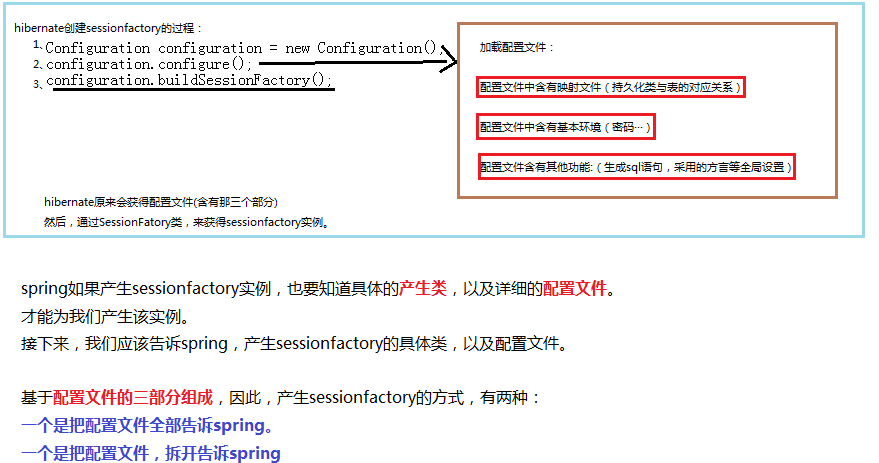

注意，什么是sessionfactory，他就是表述的一个关于hibernate的各种配置信息的一个类，他包括本次数据库连接中，密码，驱动，以及对hibernate各种设置的各个信息的类。

因为在spring的规则中，如果想要某一个类的实例，就必须指定产生类，并且通过依赖注入（DI）的方式，给产生类赋予相应的值。当时，在hibernate提供的实现类中，没有提供setter方法，或者构造器方法，因此，spring就自己弄了一和SessionFactory类功能一样，并且提供了setter方法的牛类（这叫做学会变通。）
该类，就是
在其父类中：

这样，就符合了spring的规则
有了产生类，如果在可以DI，就能够获得实例SessionFactory的实例了。
两种方式完成DI
一个是注入全部的配置文件，给spring弄出的牛类。
一个分别注入
DataSource代表基本环境、
某一个包及其自包的下的映射文件、
一些全局配置
完成上面三个，DI给牛类，就可以获得SessionFactory实例了。

获取sessionfactory的两种方式：
方式一：
上图可以看出，获取sessionfactory，只要获得hibernate的配置文件，就可以。因此，方式一就是采用这个配置的。也就是下图中，红色线，圈住的，hibernate的配置文件，被hibernate加载，然后，就可以获得sessionfactory。不必传递数据源。


接下来，就是实实在在与hibernate结合了，在获得SessionFactory（会创建表结构）之后，就可以获得session，然后，就可以执行save等等按照对象的方式，操作数据库的快感了。
方式一注解：sessionfactory是由sessionfactoryImpl这个类来生成的。但是，该类没有依赖注入（注入hibernate的配置文件，通过 configLocation属性，），不符合spring类的特点，因此，他自己弄了一个类：叫做：LocalSessionFactoryBean。
方式二：
sessionfactory的产生，本来是hibernate的sessionfactoryImpl类，来实现，现在，交给spring，就应该把对hibernate的各个配置，告诉spring，该方式，是将配置文件分离，分为环境类型（DataSource），映射文件，配置文件，因此，会使用以下的配置：
上述方式表明，通过spring自创的类，来获得sessionfactory实例，而不是由hibernate来完成创建工作。
完成之后，只要在客户端，启动容器，就能够获得SessionFactory。
接下来，就是实实在在与hibernate结合了，在获得SessionFactory（会创建表结构）之后，就可以获得session，然后，就可以执行save等等按照对象的方式，操作数据库的快感了。
在获得SessionFactory之后，还要有开启事务，这一个事件：
配置文件如下：

关于session
从上图可以看出，程序员使用 sessionFactory产生session ，从而进行 crud的操作
Spring容器利用 sessionFactory产生session ，进行事务的操作，所以 spring容器产生
的session 和程序员用的 session肯定是同一个session，所以在 spring声明式事务处理的
时候，session 必须由当前线程产生。
具体的使用：

类似于JDBC，也是有模板类，只要传递SessionFactory（类似于传递DataSource），就可以使模板类工作了。

在以后，不管是使用jdbc，还是hibernate，都可以使用模板中的方法，只要注入相应的数据（一般是一个类的实例）
在以后，不管是使用jdbc，还是hibernate，都可以使用模板中的方法，只要注入相应的数据（一般是一个类的实例）